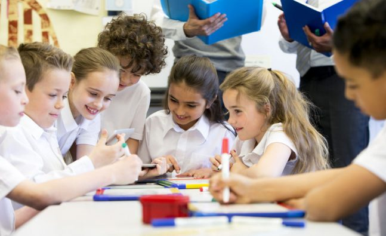
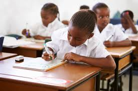
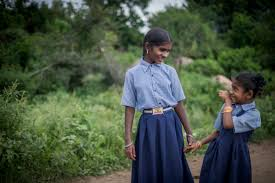
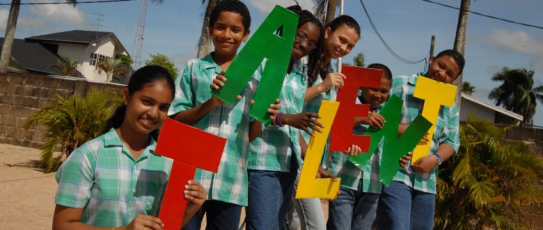
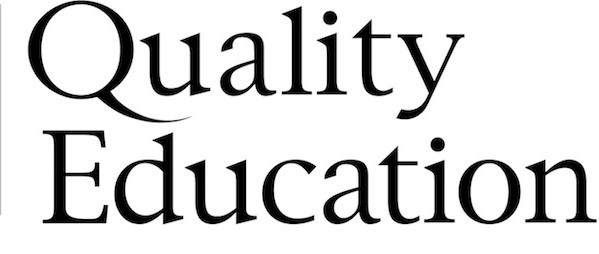
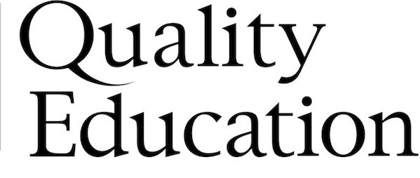

"A good quality education is one that provides all learners with capabilities they require to become economically productive, develop sustainable livelihoods, contribute to peaceful and democratic societies and enhance individual well-being. The learning outcomes that are required vary according to context but at the end of the basic education cycle must include levels of literacy and numeracy, basic scientific knowledge and life skills including awareness and prevention of disease."
Six Crucial Dimensions of Quality Education
we believes that education leads to empowerment: a process of strengthening individuals, organisations and communities so they get more control over their own situations and environments. Quality education is a crucial factor in combating poverty and inequality in society. In quality education, VVOB distinguishes six dimensions that all interventions of the organisation need to meet.
Equity

The VVOB definition refers to "all learners". This term refers to non-discrimination and equity. Equity in education means that personal and social circumstances such as gender, ethnic origin or family background are not obstacles to achieving educational potential and that all individuals reach at least a basic minimum level of skills. VVOB in particular focuses on gender equity.
Contextualisation and Relevance

Quality education cannot be based on a blueprint that is applicable in all situations. Solutions and adaptations of education systems must be based on the real needs of a country and/or community. To guarantee this, we evaluates its interventions.
Child-friendly Teaching and Learning
Quality education puts the child in the centre and helps it to reach his or her full potential. Quality Education requires children’s active participation.
Sustainability
Educational change processes often need time to be realised. By enhancing the capacities of local education authorities, VVOB aims to institutionalise these processes.
Balanced Approach

Quality education aims at developing a balanced set of capabilities of children they require to become economically productive, develop sustainable livelihoods, contribute to peaceful and democratic societies and enhance individual well-being.
Learning Outcomes

After completing a certain level of education, children must have developed a minimum standard of skills. Quality education requires a results-oriented approach.
A Fundamental Principle
It is firmly believed that quality education can only be achieved if equity, and particularly gender equity, is achieved within the education system.
 
